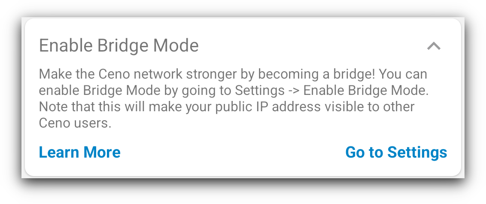
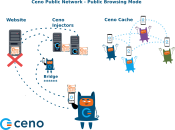
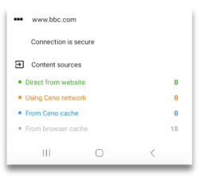

Public or Personal?
After the onboarding and permissions screens, the app displays its main screen. As soon as the screen appears, you will notice two prominent buttons called Public and Personal. They allow you to choose between the Public and Personal browsing mode.
Public Browsing
Below image illustrates the way Ceno retrieves website content in Public browsing mode.

Dotted lines on this image represent the website content requests and responses, and the asterisks represent encrypted content.
In Public browsing mode, the users’ requests are handled by the Ceno public network. In this mode, the users request some website content the same way they do that when using any other browser. If Ceno is able to access the origin website directly, it will retrieve its content and deliver it to the user - this is the same as most other browsers.
However, if Ceno is not able to reach the desired website, then it will try to reach it via injectors.
Injectors
Injectors are secure servers responsible for injecting the commonly accessed content into the Ceno network, and for verifying its authenticity and signing it. The injectors are placed in strategic locations, so that they remain reachable by the users in restricted areas and can also reach the origin websites . They help retrieve the desired content either from the origin website or from the Ceno network and return it to the user who requested it. They are run by eQualitie.
As a user, you don't need to do anything to connect to an Injector - the app does it automatically when you request a website that it cannot access directly.
Bridges
Bridges are devices belonging to individual Ceno users based in locations that enjoy relatively unrestrictied connectivity and internet access. They are reachable by Ceno users who are unable to reach the websites directly. These devices are responsible for forwarding encrypted user requests to Injectors and the encrypted responses back to the users.
Bridges are not able to read the requests and responses they forward.
Every Ceno user can configure their device to become a bridge.
The Enable bridge mode toggle can be reached either from the link on the home page, or from the vertical three dot menu, to the right of the address bar.
In the Settings page, moving the Enable bridge mode toggle to ON position
will make your device a bridge for other Ceno users whose access to internet is more restricted. This requires Ceno services to restart
Once the bridge mode is successfully established, you will receive a confirmation message.
From this point on, the Ceno app on your device can act as a bridge to help Ceno users in restricted areas reach desired content.
However, bridging also requires specific settings of your router or network, which are described in the Bridge Configuration section.
Ceno cache
And last but not least, the Ceno cache. All Ceno users are members of this peer-to-peer network, and they store the website content retrieved via Ceno public network and share it between each other.
In Public browsing mode, Ceno retrieves the requested content using any of these communication channels. It strips down all private data (like passwords and cookies) from Web traffic to ensure that it does not leak it to other users.
Public browsing - when to use it
This option is conceived for you, the user, to access most things that don’t require you to log in or input any personal data. You can use it to browse, listen to podcasts, watch the news, read blogs or articles, follow sports, science, music, events or other content. In Public browsing mode, Ceno may try to access the requested content directly from the websites, from Ceno public network (injectors and bridges) or from other Ceno users (distributed cache).
Please note that some content which is not considered safe for sharing will never be injected, no matter how many people retrieve it using public browsing. This includes content marked as private by the origin server, content that requires authentication, and some traffic exchanged by certain dynamic web applications.
Website sources in Public browsing mode
When you want to access a website using Ceno Public browsing mode, the app may try to retrieve the content either from the website directly or via Ceno public network. In the following chapter we describe this process in more detail.
Content retrieved directly from the website
Ceno will retrieve the desired content directly from the origin server when that server is reachable. This is the same way you access any website through most other popular browsers.

When you access websites this way, they are not stored in your cache and you cannot share them with other members of the Ceno network. When Ceno retrieves the content from the origin server, the small Ceno button on your the address bar will have a green dot.
If you tap on that button, you will see how many components of the requested website were retrieved from the website, Ceno network or Ceno cache.
If you go to Settings > Data you can verfiy verify that no data is stored in your cache after you have accessed a website directly from its server.
In this case, the risks for you as a user are similar to the risks associated with using any other browser. Learn more.
Content retrieved via Ceno public network
When Ceno is not able to reach the origin server it will try to access them via Ceno public network.
This network contains secure servers called Injectors, which have direct access to the origin websites, and which inject the content of those websites into the Ceno network. When website content is retrieved via Ceno public network, this will be indicated by an orange dot on the small Ceno button on your address bar.
Tapping on this button will open a small window which will inform you how many website components were retrieved from public Ceno network.
Any website that you access this way will be stored in the local cache of your Ceno browser, and will be made available to other members of the Ceno network.
You can see which websites are stored in your cache by going to Settings > Data section.
There are three entries within that section: Local cache, Content shred by you, and Clear cached content.
The Local cache section shows you how much data has been stored in the Ceno cache on your device.
If you tap on Content shared by you, you will be able to see the websites that your device can make available to Ceno network.
Tapping Clear cached content option will allow you to delete all cached data.
Cached Content
This way of accessing websites is useful when other components of Ceno public network are not reachable, or when you decide to access a website from your peers’ devices for other reasons.
Below image illustrates the requests and responses exhcanged exchanged between members of Ceno network who have previsously accessed and cached the desired websites.
If a website content is retrieved via Ceno cache, the Ceno button will have a small blue dot to indicate that.
Clicking on the Ceno button will open the information screen that indicates the same.
In this case, the website content will be cached on your device and will be shared with other Ceno users when requested. You can verify that by going to Settings > Data > Content shared by you.
It can also happen that ceno browser opens a website that was stored in your own cache when you accessed it before. When that happens, Ceno will inform you by displaying the wbesite sources in grey colour.
In Ceno Settings > Developer tools > Website sources you can check or uncheck these four settings.
If they are all checked, depending on the browsing mode, Ceno tries to fetch the website via all applicable mechanisms, at the same time. We call it a "mixed fetch". Whichever mechanism responds first is the one that is used and the rest of the requests are cancelled.
For best results, we recomment that all 4 of these boxes remain checked at all times.
Personal Browsing - when to use it
You can select personal browsing by tapping on the Personal button on the main screen.
When you select this option, even if all four Website sources settings are checked, your Ceno app will attempt to access the desired websites only directly or via Ceno private network.
This browsing mode can be used for websites where you need to log in and enter other personal data. Examples are: shopping websites, email, social media sites or other websites that you do not wish to share with the rest of the Ceno network.
Accessing websites via Private ceno network
The following image shows the flow of website requests and responses between Ceno private network elements.

In Personal browsing mode, when a website is requested, Ceno will retrieve it directly from the origin servers, or via Ceno Injectors. However, in Personal mode, the Injectors do not cache the content like they do in Public browsing mode. They simply forward the request to the origin server and forward the response to the user, but cannot see the encrypted content. Learn more about Personal browsing mode.
Sometimes, if a website is unreachable in Public browsing mode, because of differences in how these two modes operate, we suggest attempting to reach it via Personal browsing mode instead.
For this mechanism to work, it is necessary that the Website sources Privately and Website remain checked.